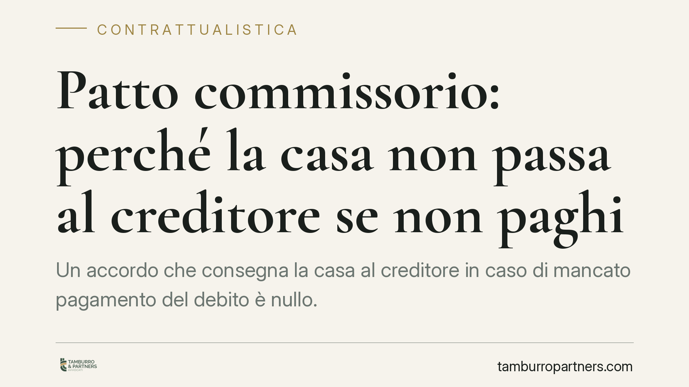

Patto commissorio: perché la casa non passa al creditore se non paghi
Un accordo che consegna la casa al creditore in caso di mancato pagamento del debito è nullo. Lo prevede il divieto di patto commissorio, principio di ordine pubblico ribadito da Cassazione e tribunali. Comprendere il perimetro di questa nullità è decisivo per chi presta o riceve denaro con garanzie immobiliari, spesso mascherate sotto forma di vendite apparenti.

Il fatto e perché conta
Capita che, a fronte di un prestito, il creditore chieda una garanzia forte: se il debitore non paga, la proprietà dell'immobile passa automaticamente a lui. L'accordo può assumere le vesti più diverse — una vendita con patto di riscatto, una cessione condizionata, una promessa di trasferimento. Il risultato, però, è sempre lo stesso: il bene garantisce il debito e cambia proprietario in caso di inadempimento.
La legge non ammette questo meccanismo. Il cosiddetto patto commissorio è nullo, e la nullità travolge l'intera operazione a prescindere dalla forma scelta dalle parti.
Inquadramento normativo
Il divieto è contenuto nell'art. 2744 del Codice civile, secondo cui è nullo il patto con il quale si conviene che, in mancanza del pagamento del credito nel termine fissato, la proprietà della cosa ipotecata o data in pegno passi al creditore. La norma si applica anche all'anticresi, cioè al contratto con cui il debitore consegna un immobile al creditore perché ne percepisca i frutti a scomputo del debito.
Sul fronte della vendita, l'art. 1963 c.c. stabilisce che è nullo qualunque patto, anche posteriore al contratto, con cui si conviene che la proprietà dell'immobile passi al creditore in caso di inadempimento.
La ratio è chiara: impedire che il creditore approfitti dello stato di bisogno del debitore per acquisire un bene di valore spesso molto superiore al credito, aggirando le regole della vendita forzata. La giurisprudenza — con pronunce della Cassazione e di diversi tribunali di merito, tra cui Catanzaro, Cosenza e Reggio Calabria — ha esteso il divieto a ogni operazione che, al di là del nome, persegua quella funzione di garanzia con trasferimento automatico.
Il confine con il patto marciano
Esiste un'eccezione riconosciuta: il patto marciano. È lecito l'accordo in cui, in caso di inadempimento, il bene passa al creditore ma con l'obbligo di stimarne il valore e restituire al debitore l'eventuale eccedenza rispetto al debito. Qui non c'è approfittamento, perché il debitore riceve indietro la differenza. La distinzione è delicata: la presenza di una stima equa e di un meccanismo di conguaglio è ciò che salva l'operazione dalla nullità.
Implicazioni pratiche
Per il debitore, la nullità è una tutela: anche se ha firmato l'accordo, il trasferimento non produce effetti e può chiedere al giudice l'accertamento della nullità, con restituzione del bene o cancellazione della trascrizione. La nullità è rilevabile in ogni momento e non si sana con il tempo.
Per il creditore, l'operazione è un rischio concreto: la garanzia su cui contava è priva di effetti, e potrebbe ritrovarsi senza tutela reale sul credito. Chi vuole assistere un prestito con una garanzia immobiliare deve percorrere strade valide — ipoteca, patto marciano correttamente strutturato — non scorciatoie che il giudice qualificherà come patto commissorio.
Attenzione anche alle vendite simulate: una compravendita reale, con prezzo effettivo e senza funzione di garanzia, resta valida. Il problema sorge quando la vendita è solo apparente e nasconde un prestito garantito.
Cosa fare in concreto
- Verifica la funzione reale dell'accordo: se il trasferimento è condizionato al mancato pagamento di un debito, è quasi certamente un patto commissorio nullo.
- Non fare affidamento sulla firma: la nullità opera per legge e nessuna clausola può renderlo valido.
- Se sei creditore, struttura la garanzia in modo lecito: valuta ipoteca o un patto marciano con stima peritale e conguaglio dell'eccedenza.
- Se sei debitore, conserva ogni documento su prestito, prezzo e valore dell'immobile: sono decisivi per dimostrare la reale natura dell'operazione.
- Fatti assistere prima di firmare: una garanzia impostata male può rivelarsi carta straccia in giudizio.
Consigliamo, in presenza di operazioni che collegano un debito al trasferimento di un immobile, una verifica preventiva della validità delle clausole, prima che il contenzioso renda tutto più costoso.
Disclaimer
Contributo informativo a cura di Tamburro & Partners - Avv. Giuseppe Tamburro. Non costituisce parere legale.
Ogni contratto ha il suo equilibrio.
Se vuoi una revisione delle clausole o una redazione su misura, scrivi allo studio. Ti rispondiamo entro un giorno lavorativo.